Recursos nuevos
Aquí aparecen primero mis recursos más nuevos. La lista se actualiza automáticamente.
48 recursos

Salud y cuerpo humano – Spanish Reading BUNDLE | Health Fichas

Países hispanohablantes – Spanish Reading BUNDLE | Spanish-Speaking Countries

Navidad y Año Nuevo – Spanish Reading BUNDLE | Christmas & New Year Fichas
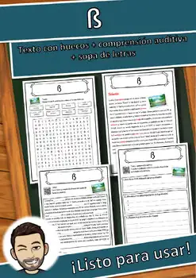
ß – Ficha de lectura: texto con huecos, comprensión auditiva y sopa de letras
Testigos de Jehová – Ficha de lectura: texto con huecos, comprensión auditiva y sopa de letras
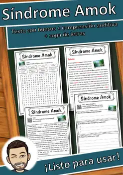
Síndrome Amok – Ficha de lectura: texto con huecos, comprensión auditiva y sopa de letras
Suelo franco – Ficha de lectura: texto con huecos, comprensión auditiva y sopa de letras
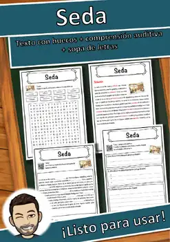
Seda – Ficha de lectura: texto con huecos, comprensión auditiva y sopa de letras
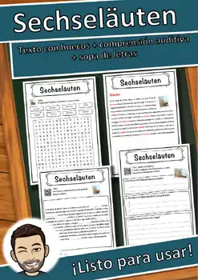
Sechseläuten – Ficha de lectura: texto con huecos, comprensión auditiva y sopa de letras
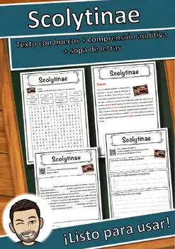
Scolytinae – Ficha de lectura: texto con huecos, comprensión auditiva y sopa de letras

Schiffe versenken – Ficha de lectura: texto con huecos, comprensión auditiva y sopa de letras
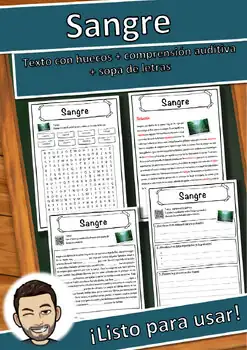
Sangre – Ficha de lectura: texto con huecos, comprensión auditiva y sopa de letras
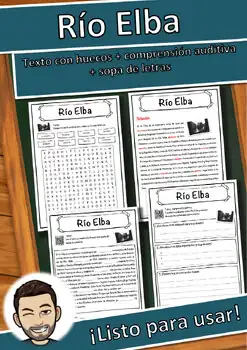
Río Elba – Ficha de lectura: texto con huecos, comprensión auditiva y sopa de letras
Pozo – Ficha de lectura: texto con huecos, comprensión auditiva y sopa de letras
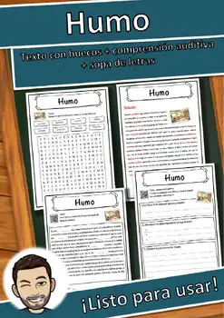
Humo – Ficha de lectura: texto con huecos, comprensión auditiva y sopa de letras
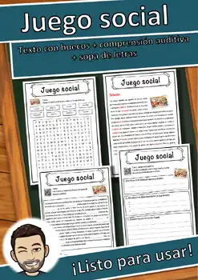
Juego social – Ficha de lectura: texto con huecos, comprensión auditiva y sopa de letras
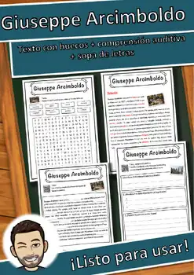
Giuseppe Arcimboldo – Ficha de lectura: texto con huecos, comprensión auditiva y sopa de letras
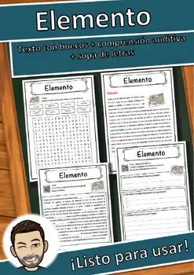
Elemento – Ficha de lectura: texto con huecos, comprensión auditiva y sopa de letras
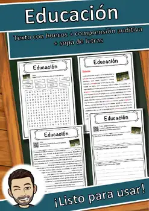
Educación – Ficha de lectura: texto con huecos, comprensión auditiva y sopa de letras
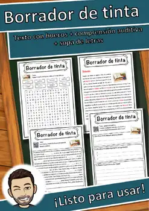
Borrador de tinta – Ficha de lectura: texto con huecos, comprensión auditiva y sopa de letras
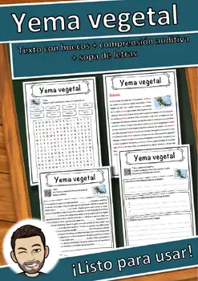
Yema vegetal – Ficha de lectura: texto con huecos, comprensión auditiva y sopa de letras
Xilófono – Ficha de lectura: texto con huecos, comprensión auditiva y sopa de letras
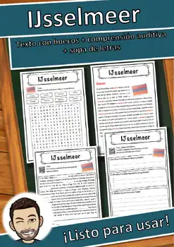
IJsselmeer – Ficha de lectura: texto con huecos, comprensión auditiva y sopa de letras
Ámsterdam – Ficha de lectura: texto con huecos, comprensión auditiva y sopa de letras
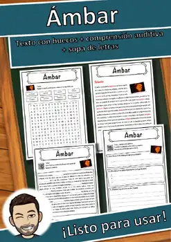
Ámbar – Ficha de lectura: texto con huecos, comprensión auditiva y sopa de letras
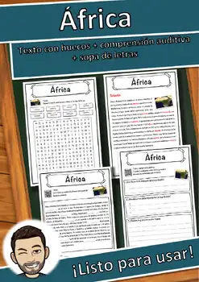
África – Ficha de lectura: texto con huecos, comprensión auditiva y sopa de letras
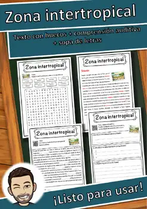
Zona intertropical – Ficha de lectura: texto con huecos, comprensión auditiva y sopa de letras
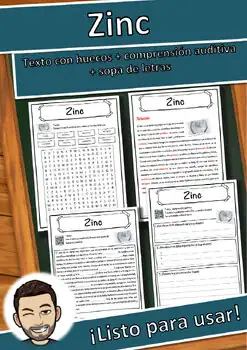
Zinc – Ficha de lectura: texto con huecos, comprensión auditiva y sopa de letras

Zimmermann – Ficha de lectura: texto con huecos, comprensión auditiva y sopa de letras

Zeus – Ficha de lectura: texto con huecos, comprensión auditiva y sopa de letras

Zelt – Ficha de lectura: texto con huecos, comprensión auditiva y sopa de letras

Zeit – Ficha de lectura: texto con huecos, comprensión auditiva y sopa de letras
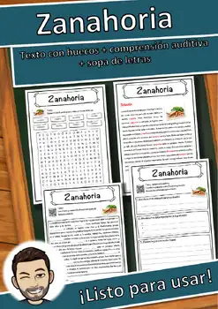
Zanahoria – Ficha de lectura: texto con huecos, comprensión auditiva y sopa de letras
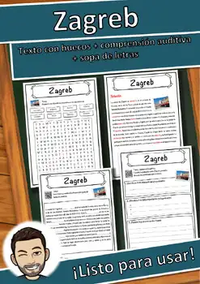
Zagreb – Ficha de lectura: texto con huecos, comprensión auditiva y sopa de letras
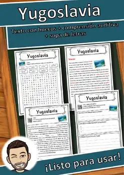
Yugoslavia – Ficha de lectura: texto con huecos, comprensión auditiva y sopa de letras

Yoga – Ficha de lectura: texto con huecos, comprensión auditiva y sopa de letras
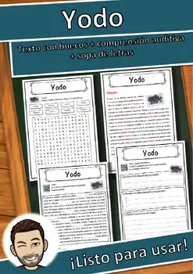
Yodo – Ficha de lectura: texto con huecos, comprensión auditiva y sopa de letras
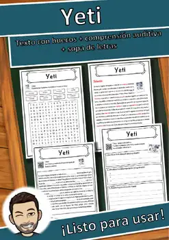
Yeti – Ficha de lectura: texto con huecos, comprensión auditiva y sopa de letras
Xenón – Ficha de lectura: texto con huecos, comprensión auditiva y sopa de letras
Wolframio – Ficha de lectura: texto con huecos, comprensión auditiva y sopa de letras
William Shakespeare – Ficha de lectura: texto con huecos, comprensión auditiva y sopa de letras

Wilhelm der Eroberer – Ficha de lectura: texto con huecos, comprensión auditiva y sopa de letras
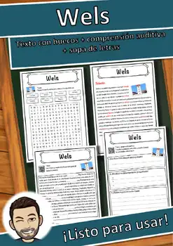
Wels – Ficha de lectura: texto con huecos, comprensión auditiva y sopa de letras

Weiße Frau – Ficha de lectura: texto con huecos, comprensión auditiva y sopa de letras
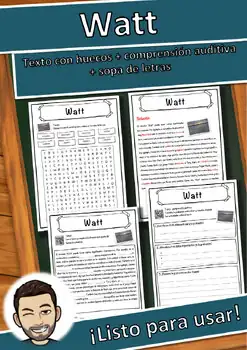
Watt – Ficha de lectura: texto con huecos, comprensión auditiva y sopa de letras
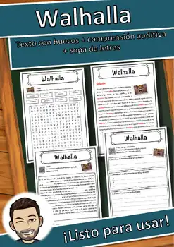
Walhalla – Ficha de lectura: texto con huecos, comprensión auditiva y sopa de letras
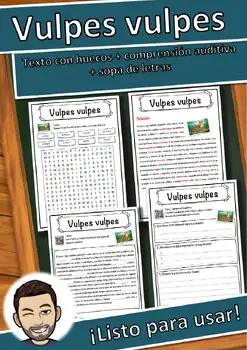
Vulpes vulpes – Ficha de lectura: texto con huecos, comprensión auditiva y sopa de letras
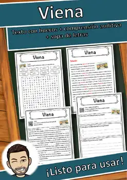
Viena – Ficha de lectura: texto con huecos, comprensión auditiva y sopa de letras
No se encontraron recursos. Prueba con otra palabra o con otro filtro.